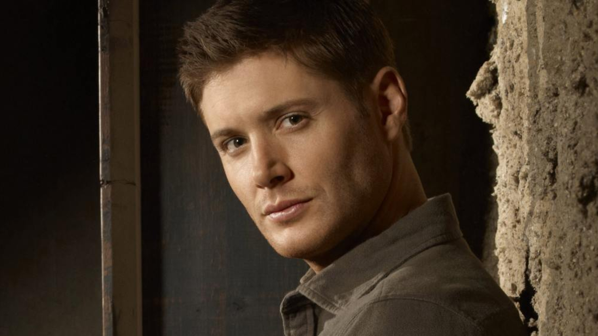
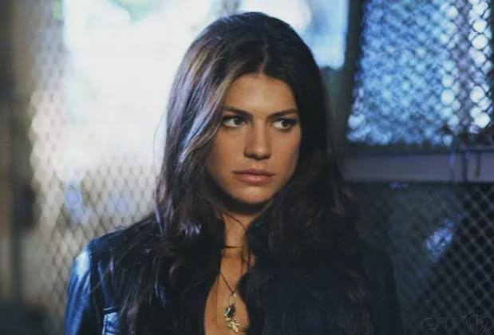
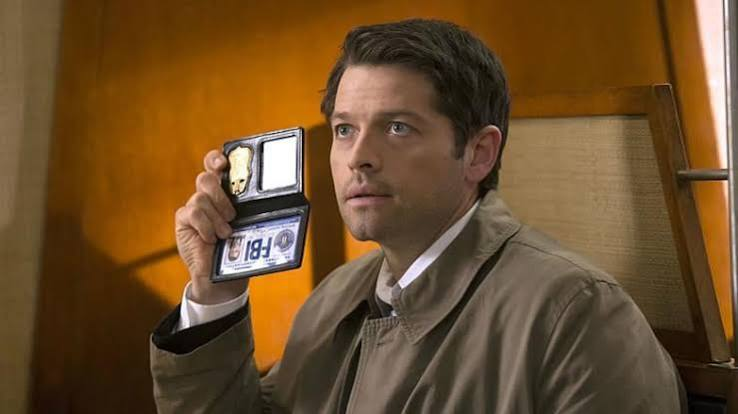

-Dean Winchester (todas las temporadas)
-Ruby (temporadas 3-4, 15)
-Castiel (temporadas 4-15)

La serie, basada en los fenómenos inexplicables y las leyendas urbanas que recorren el territorio americano, cuenta la historia de dos jóvenes hermanos que, a partir de la muerte de su madre a manos de un demonio y la misteriosa desaparición de su padre, se dedican al "negocio familiar": cazar seres sobrenaturales, con la finalidad de encontrar al demonio causante de su tragedia familiar y cobrar venganza.

Ayuda constantemente a los protagonistas Sam y Dean Winchester. En la cuarta temporada, tras haber cambiado drásticamente, se gana la confianza de Sam, entrenándolo para poder exorcizar demonios aunque Dean nunca confía en ella. Sin embargo, se revela en el episodio final que siempre lo ha manipulado y que ha sido una de las sirvientes más leales de la principal antagonista de la temporada, un demonio llamado Lilith.

Castiel es un ángel, responsable de rescatar a Dean del Infierno, y quien se rebeló contra el Cielo y se unió a los Winchester para detener el Apocalipsis, convirtiéndose en amigos con Sam y Dean. Es conocido por las cosas que ha cometido, por las cuales es respetado y aborrecido, pero principalmente por salvar a los hermanos Winchester una y otra vez
Video de Dean